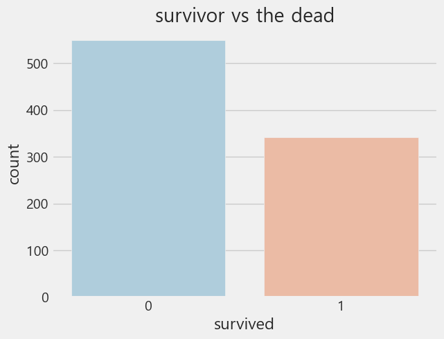
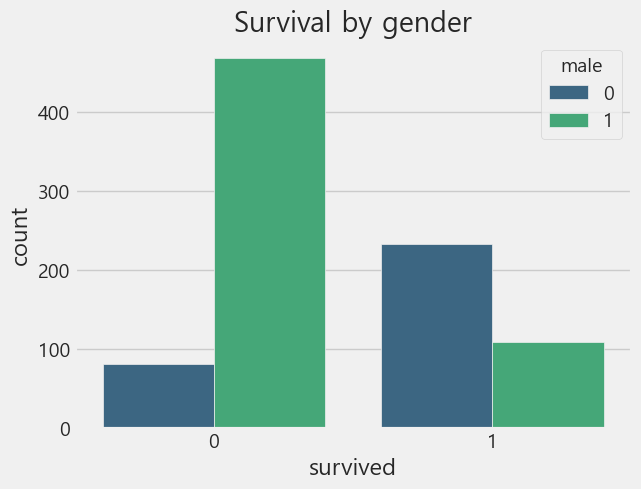
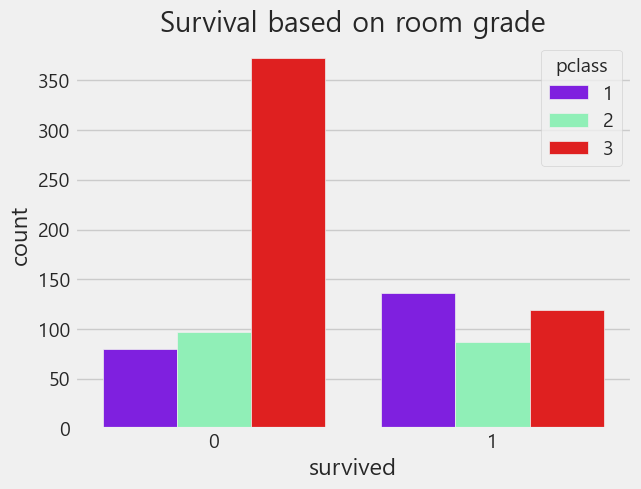
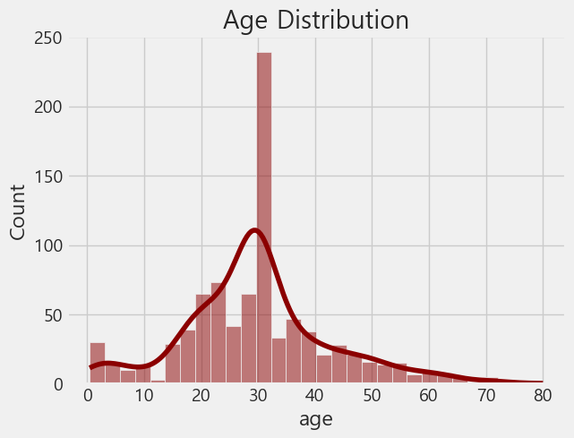
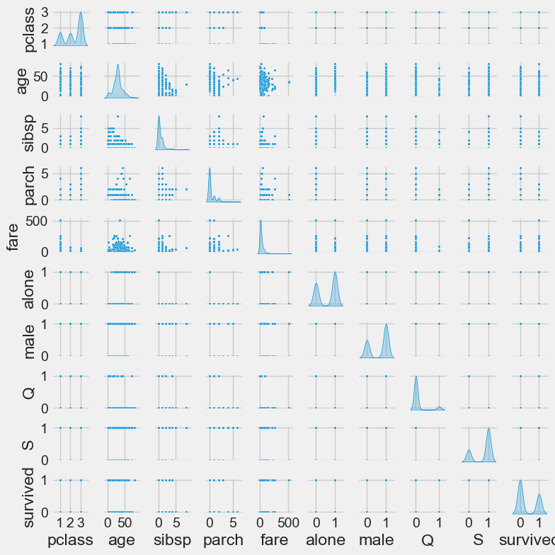
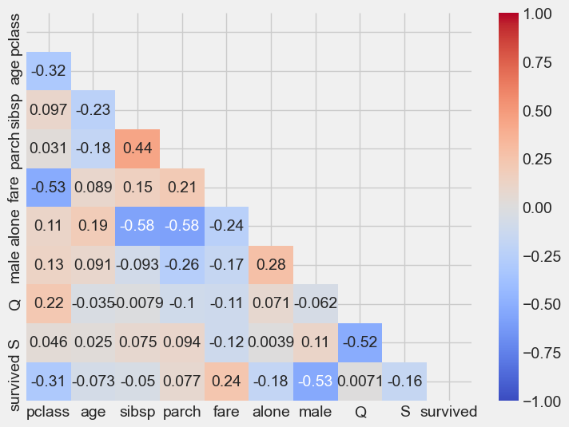

# 라이브러리 불러오기 - 데이터 분석 및 시각화
import numpy as np
import pandas as pd
import matplotlib.pyplot as plt
import seaborn as snsProject3 : 타이타닉 데이터 분석
1. 데이터셋
- seaborn에서는 titanic에 대한 데이터를 제공함.
- RMS 타이타닉은 영국의 화이트 스타 라인이 운영한 북대서양 횡단 여객선으로, 1921년 4월 10일 첫 출항함. 영국의 사우샘프턴을 떠나 미국의 뉴욕으로 향하던 중에 4월 15일 빙산과 충돌하여 침몰하였으며, 이로 인해 1,514명이 사망한 것으로 알려져 있음.
- 타이타닉 데이터를 분석하여 생존에 영향을 준 요인을 파악하고, 이를 바탕으로 생존 여부를 예측하는 모델을 학습시키고자 함.
2. 데이터 확인 및 전처리
# 라이브러리 불러오기 - 모델링
from sklearn.model_selection import train_test_split
from sklearn.linear_model import LogisticRegression
from sklearn.metrics import accuracy_score, confusion_matrix, classification_report
# 스타일 설정
%matplotlib inline
sns.set_style('whitegrid')
plt.style.use('fivethirtyeight')# 데이터 불러오기
titanic = sns.load_dataset('titanic')
titanic.head()| survived | pclass | sex | age | sibsp | parch | fare | embarked | class | who | adult_male | deck | embark_town | alive | alone | |
|---|---|---|---|---|---|---|---|---|---|---|---|---|---|---|---|
| 0 | 0 | 3 | male | 22.0 | 1 | 0 | 7.2500 | S | Third | man | True | NaN | Southampton | no | False |
| 1 | 1 | 1 | female | 38.0 | 1 | 0 | 71.2833 | C | First | woman | False | C | Cherbourg | yes | False |
| 2 | 1 | 3 | female | 26.0 | 0 | 0 | 7.9250 | S | Third | woman | False | NaN | Southampton | yes | True |
| 3 | 1 | 1 | female | 35.0 | 1 | 0 | 53.1000 | S | First | woman | False | C | Southampton | yes | False |
| 4 | 0 | 3 | male | 35.0 | 0 | 0 | 8.0500 | S | Third | man | True | NaN | Southampton | no | True |
# 데이터 확인
titanic.info()<class 'pandas.core.frame.DataFrame'>
RangeIndex: 891 entries, 0 to 890
Data columns (total 15 columns):
# Column Non-Null Count Dtype
--- ------ -------------- -----
0 survived 891 non-null int64
1 pclass 891 non-null int64
2 sex 891 non-null object
3 age 714 non-null float64
4 sibsp 891 non-null int64
5 parch 891 non-null int64
6 fare 891 non-null float64
7 embarked 889 non-null object
8 class 891 non-null category
9 who 891 non-null object
10 adult_male 891 non-null bool
11 deck 203 non-null category
12 embark_town 889 non-null object
13 alive 891 non-null object
14 alone 891 non-null bool
dtypes: bool(2), category(2), float64(2), int64(4), object(5)
memory usage: 80.7+ KB- seaborn 라이브러리에서 제공하는 titanic 데이터 사용
- survived: 생존 여부(0, 1)
- pclass: 객실 등급(1, 2, 3)
- sex: 성별
- age: 나이
- sibsp: 함께 탑승한 형제자매, 배우자 수
- parch: 함께 탑승한 부모, 자식 수
- fare: 요금
- embarked: 탑승 항구(S, C, Q)
- class: 객실 등급(First, Second, Third)
- who: 사람 구분(man, woman, child)
- adult_male: 성인 남자 여부(True, False)
- deck: 갑판
- embark_town: 탑승 항구(Southhampton, Cherbourg, Queenstown)
- alive: 생존여부(no, yes)
- alone: 1인 탑승 여부(True, False)
# 데이터 전처리(1) : 의미가 중복되는 변수 삭제하기
titanic.drop(['class', 'embark_town', 'alive', 'adult_male'], axis=1, inplace=True)# 데이터 전처리(2) : 결측값 확인
# 결측값은 age, embarked, deck에서 있는 것으로 나타남
titanic.isna().sum()survived 0
pclass 0
sex 0
age 177
sibsp 0
parch 0
fare 0
embarked 2
who 0
deck 688
alone 0
dtype: int64# 데이터 전처리 : 결측값 처리
# age - 전체 데이터의 평균 나이로 채우기
titanic['age'] = titanic['age'].fillna(titanic['age'].mean())
# deck - 결측치 너무 많음 -> 제거
titanic.drop('deck', axis=1, inplace=True, errors='ignore')
# Embarked - 최빈값으로 채우기
titanic['embarked'] = titanic['embarked'].fillna(titanic['embarked'].mode()[0])# 범주형 데이터 변환
# 범주형 변수들을 원-핫 인코딩으로 변환
sex = pd.get_dummies(titanic['sex'], drop_first=True, dtype=int)
embark = pd.get_dummies(titanic['embarked'], drop_first=True, dtype=int)
# 기존의 범주형 열과 불필요한 열 제거
titanic.drop(['sex', 'embarked', 'who'], axis=1, inplace=True)
# 변환된 수치형 데이터프레임과 기존 데이터프레임 병합
titanic = pd.concat([titanic, sex, embark], axis=1)
titanic.head()| survived | pclass | age | sibsp | parch | fare | alone | male | Q | S | |
|---|---|---|---|---|---|---|---|---|---|---|
| 0 | 0 | 3 | 22.0 | 1 | 0 | 7.2500 | False | 1 | 0 | 1 |
| 1 | 1 | 1 | 38.0 | 1 | 0 | 71.2833 | False | 0 | 0 | 0 |
| 2 | 1 | 3 | 26.0 | 0 | 0 | 7.9250 | True | 0 | 0 | 1 |
| 3 | 1 | 1 | 35.0 | 1 | 0 | 53.1000 | False | 0 | 0 | 1 |
| 4 | 0 | 3 | 35.0 | 0 | 0 | 8.0500 | True | 1 | 0 | 1 |
3. 학습/평가 데이터 분할
- 학습 데이터와 평가 데이터를 7:3 비율로 분할함
# 학습/평가 데이터 분할 (7:3비율)
X = titanic.drop('survived', axis=1) # feature
y = titanic['survived'] # target
X_train, X_test, y_train, y_test = train_test_split(X, y, test_size=0.3, random_state=42)4. 데이터 탐색
# 요약 통계량 확인
X_train.describe()| pclass | age | sibsp | parch | fare | male | Q | S | |
|---|---|---|---|---|---|---|---|---|
| count | 623.000000 | 623.000000 | 623.000000 | 623.000000 | 623.000000 | 623.000000 | 623.000000 | 623.000000 |
| mean | 2.341894 | 29.344479 | 0.576244 | 0.386838 | 31.840730 | 0.658106 | 0.088283 | 0.735152 |
| std | 0.819945 | 13.028013 | 1.216267 | 0.807692 | 51.027372 | 0.474725 | 0.283933 | 0.441607 |
| min | 1.000000 | 0.420000 | 0.000000 | 0.000000 | 0.000000 | 0.000000 | 0.000000 | 0.000000 |
| 25% | 2.000000 | 22.000000 | 0.000000 | 0.000000 | 7.925000 | 0.000000 | 0.000000 | 0.000000 |
| 50% | 3.000000 | 29.699118 | 0.000000 | 0.000000 | 14.454200 | 1.000000 | 0.000000 | 1.000000 |
| 75% | 3.000000 | 35.000000 | 1.000000 | 0.000000 | 30.750000 | 1.000000 | 0.000000 | 1.000000 |
| max | 3.000000 | 80.000000 | 8.000000 | 6.000000 | 512.329200 | 1.000000 | 1.000000 | 1.000000 |
# 생존 여부에 따른 승객 수
sns.countplot(x='survived', data=titanic, hue='survived', palette='RdBu_r', legend=False)
plt.title('survivor vs the dead')
plt.show()
- 사망자가 생존자보다 많음
# 성별에 따른 생존율
sns.countplot(x='survived', hue='male', data=titanic, palette='viridis')
plt.title('Survival by gender')
plt.show()
- 남성이 여성보다 생존하지 못한 비율이 더 높음
# 객실 등급에 따른 생존율
sns.countplot(x='survived', hue='pclass', data=titanic, palette='rainbow')
plt.title('Survival based on room grade')
plt.show()
- 3등급 승객의 사망률이 가장 높고, 1등급 승객의 생존률이 가장 높음.
- 즉, 객실 등급이 높을수록 생존 가능성이 높은 것을 확인할 수 있음.
# 나이 분포
sns.histplot(titanic['age'].dropna(), kde=True, bins=30, color='darkred')
plt.title('Age Distribution')
plt.show()
- 타이타닉 탑승객의 나이는 20~30대에 가장 많으며, 대체로 젊은 층이 많았음.
# 산점도
sns.pairplot(df_train, height=0.8, plot_kws={'s':5}, diag_kind='kde')
plt.show()
# 상관계수
corr_train=df_train.corr()
upp_mat = np.triu(corr_train)
plt.figure(figsize=(8,6))
sns.heatmap(corr_train, annot=True, mask=upp_mat, vmin=-1, vmax=1, cmap='coolwarm')
plt.show()
- 생존 여부(survived)는 성별(male)과 -0.53의 비교적 강한 음의 상관관계를 가지며, 이는 여성 승객의 생존률이 높았음을 의미함.
- 사회적 지위(pclass)는 -0.31, 운임(fare)은 0.24로 생존 여부(survived)과의 유의미한 상관관계를 보임.
- alone, age, sibsp, parch 등은 생존 여부(survived)와 약한 수준의 상관관계를 보임.
- 따라서 생존 여부(survived)를 예측하는 특성(feature)으로 해당 변수를 선택함.
5. 분류모델 학습 및 평가
a = [1,2]
a[1, 2]a.append(10)
a[1, 2, 10]# 최적의 k 값 선택
from sklearn.neighbors import KNeighborsClassifier
from sklearn.model_selection import cross_val_score
k_range = range(1, 20, 2) # 홀수 k값 탐색
k_scores = []
for k in k_range:
knn = KNeighborsClassifier(n_neighbors=k)
scores = cross_val_score(knn, X_train, y_train, cv=5, scoring='accuracy')
k_scores.append(scores.mean())
print(f'k={k}일 때 정확도: {scores.mean():.3f}')k=1일 때 정확도: 0.679
k=3일 때 정확도: 0.695
k=5일 때 정확도: 0.699
k=7일 때 정확도: 0.691
k=9일 때 정확도: 0.691
k=11일 때 정확도: 0.686
k=13일 때 정확도: 0.695
k=15일 때 정확도: 0.689
k=17일 때 정확도: 0.696
k=19일 때 정확도: 0.700# 모델 성능이 가장 좋은 k 값 선택
best_k = k_range[k_scores.index(max(k_scores))]
print(f"최적의 k 값은 {best_k}이며, 평균 정확도는 {max(k_scores):.3f}")최적의 k 값은 19이며, 평균 정확도는 0.700# K-NN 분류 모델 생성 및 학습
knn = KNeighborsClassifier(n_neighbors=best_k)
knn.fit(X_train, y_train)
# train과 test 컬럼 맞추기
X_test = X_test.reindex(columns=X_train.columns, fill_value=0)
# 학습 데이터로 학습한 분류모델에 평가 데이터를 입력하여 클래스 분류
y_pred = knn.predict(X_test)
# 분류 모델 평가 : 정확도, 정밀도, 재현도
from sklearn.metrics import accuracy_score, precision_score, recall_score
accuracy = accuracy_score(y_test, y_pred)
precision = precision_score(y_test, y_pred)
recall = recall_score(y_test, y_pred)
print(f"정확도 : {accuracy:.3f}")
print(f"정밀도 : {precision:.3f}")
print(f"재현율 : {recall:.3f}")정확도 : 0.743
정밀도 : 0.756
재현율 : 0.559- 정확도는 0.743으로, 모델이 타이타닉 생존 여부를 약 74.3%의 비율로 올바르게 예측함을 의미함.
- 정밀도는 0.756으로, 생존으로 예측한 승객 중 약 75.6%가 실제로 생존했음을 나타냄.
- 재현율은 0.559로, 실제 생존자 중 약 55.9%만을 모델이 정확히 찾아냈음을 시사함.
- 따라서 재현율이 낮아 놓치는 생존자가 비교적 많아 모델의 성능 개선이 필요한 상황임.